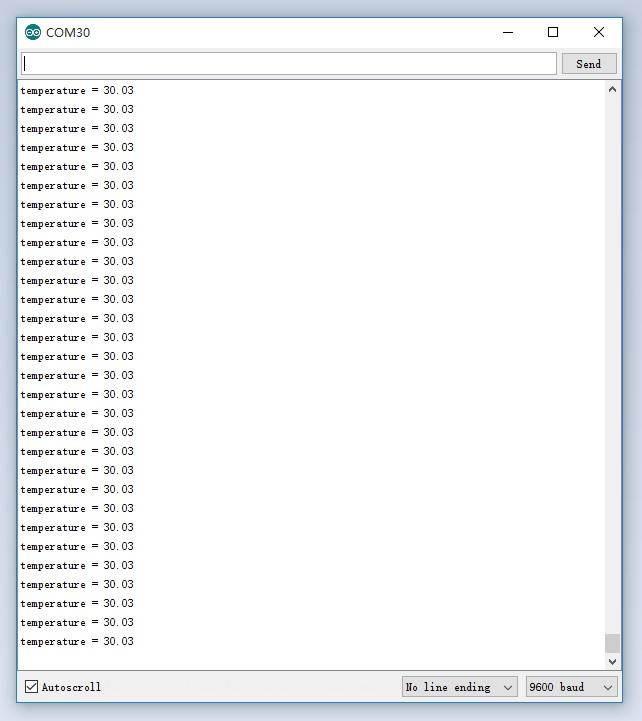

The Grove - Temperature Sensor uses a Thermistor to detect the ambient temperature. The resistance of a thermistor will increase when the ambient temperature decreases. It's this characteristic that we use to calculate the ambient temperature. The detectable range of this sensor is -40 - 125ºC, and the accuracy is ±1.5ºC
I need a Grove - Temperature Sensor V1.2
Note: This wiki works with Grove - Temperature sensor V1.1 as well, for V1.0 please refer to Grove - Temperature Sensor
After this section, you can make Grove - Temperature Sensor V1.1/1.2 run with only few steps.
Now we are making a simple demo to get data from Grove - Temperature Sensor V1.1/1.2 require following modules.
Seeeduino V4.2 is fully compatible with Arduino.
If this is your first time using Arduino, Please put hand on here to start your Arduino journey.
Just connect Grove - Temperature Sensor into A5 connector of Seeeduino v4.2
As shown below:
Launch Arduino IDE and click File>New to open a new page.
Then copy below code into Arduino IDE:
// Demo code for Grove - Temperature Sensor V1.1/1.2 // Loovee @ 2015-8-26 #include <math.h> const int B=4275; // B value of the thermistor const int R0 = 100000; // R0 = 100k const int pinTempSensor = A5; // Grove - Temperature Sensor connect to A5 void setup() { Serial.begin(9600); } void loop() { int a = analogRead(pinTempSensor ); float R = 1023.0/((float)a)-1.0; R = 100000.0*R; float temperature=1.0/(log(R/100000.0)/B+1/298.15)-273.15;//convert to temperature via datasheet ; Serial.print("temperature = "); Serial.println(temperature); delay(100); }
Click Tools>Board to choose Arduino UNO and select respective serial port.
Now click Upload(CTRL+U) to burn testing code. Please refer to here for any error prompt and you can also add comment on forum
After upload completed, Open Serial Monitor of your Arduino IDE, you can get the temperature:

If you want to know how the algorithm of temperature coming, please refer to the below image: